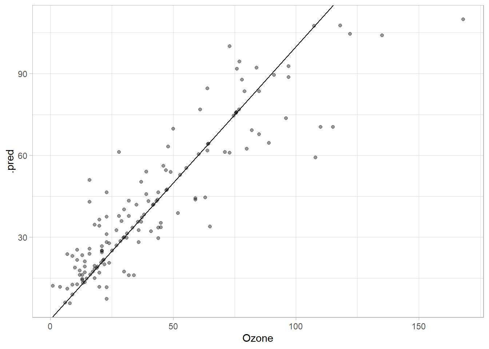
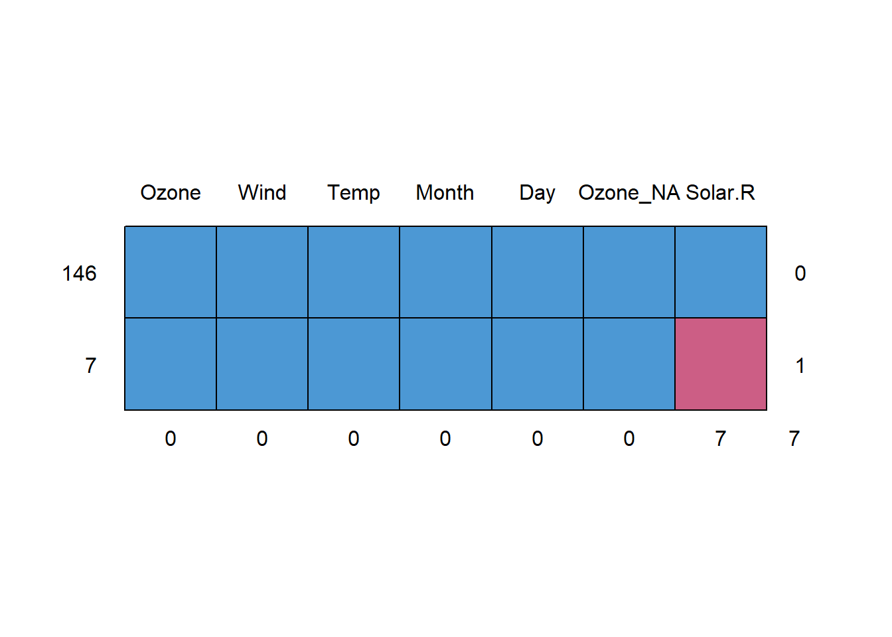

2 Feature Engineering
2.1 Handeling Missing Values
2.1.1 Introducction
If you are working with real data it’s normal to find missing values so it’s very important to understand how to manage them correctly. In R, the default for many functions is to remove missing values to create plots or train machine learning models, but that can be very dangerous as we are adding bias to our analysis that could compromise our final conclusions.
But if only 5% of your dataset’s rows present missing values and you can confirm that the values are missing completely at random (MCAR) as the probability of being missing is the same for each row removing rows won’t have any affect in our analysis.
Otherwise, the best way to handle missing values is to *impute values based on general patters found in the data. If we cannot find patterns in the current data we will need to find more data until finding a valid pattern to impute the values.
2.1.2 Imputation practical example
Let’s assume that all the predictors for a machine learning model are stored in the datasets::airquality data.frame which has some missing value we need to explore and decide what to do in this case.
To perform all the task needed to complete the process we will load next packages.
Confirming if missing completely at random
Based on next test, we can reject the null hypothesis and conclude that the missing values aren’t completely at random, so we will need to impute the missing values.
mcar_test(airquality)# A tibble: 1 × 4
statistic df p.value missing.patterns
<dbl> <dbl> <dbl> <int>
1 35.1 14 0.00142 4Explore missing values patterns
Once we know that we need to impute values, it’s important to know the column with more missing values is the Ozone one with 37 values to impute which we can divide between the ones that can use the rest of features (35 rows) and the ones that can use all the column extent the Solar.R as they are missing (2 rows).
airquality |>
mice::md.pattern(rotate.names = FALSE) |>
invisible()
Imputing Ozone values
Exploring missing values
In the next plot we can see how the missing Ozone values are spread across a wide range of values so we would be able to find big differences between the means of columns with or without missing Ozone values.
As we are plotting all variables against the target variable, it’s ease to see that the Temp, Wind and Solar.R present a not linear relation with Ozone and we cannot see a clear pattern for Day and Month.
airquality |>
pivot_longer(cols = -Ozone) |>
ggplot(aes(value, Ozone))+
geom_miss_point(aes(color = is.na(Ozone)),
alpha = 0.5,
show.legend = FALSE)+
geom_smooth(method = "lm",
se = FALSE,
color = "black")+
scale_color_manual(values = c("TRUE" = "red",
"FALSE" = "gray60"))+
facet_wrap(~name, scales = "free_x")+
theme_light()
Based on this result results we know that we need a flexible model to catch the non-linear patterns and perform some feature selection.
Training the model to impute
As we need to create 2 very similar models using to impute Ozone it’s better to create a function.
train_regression_model <- function(df,
model_to_tune,
model_grid,
formula,
step_fun,
seed = 1234){
y_wf <-
recipe(formula, data = df) |>
step_fun() |>
workflow(model_to_tune)
# Defining re-samples
set.seed(seed)
y_resamples <- mc_cv(df, times = 30)
set.seed(NULL)
y_tuned <- tune_grid(
y_wf,
resamples = y_resamples,
grid = model_grid,
metrics = metric_set(rsq)
)
y_trained_model <-
finalize_workflow(y_wf,
select_best(y_tuned)) |>
fit(df)
results <- list("fit" = y_trained_model,
"best_fit" = show_best(y_tuned))
print(results$best_fit)
return(results)
}Then we need to define common inputs for both models.
GlmModel <- linear_reg(
engine = "glmnet",
penalty = tune(),
mixture = tune()
)
GlmGrid <- grid_regular(
penalty(),
mixture(),
levels = 10
)
ozone_steps <- function(recipe){
recipe |>
step_poly(all_numeric_predictors(),
degree = 2) |>
step_interact(terms = ~(. -Ozone)^2) |>
step_zv(all_numeric_predictors()) |>
step_scale(all_numeric_predictors())
}Now we can fit but models.
OzoneSolarGlmFitted <- train_regression_model(
df = na.omit(airquality),
model_to_tune = GlmModel,
model_grid = GlmGrid,
formula = as.formula("Ozone ~ Temp + Solar.R + Wind"),
step_fun = ozone_steps,
seed = 5050
)# A tibble: 5 × 8
penalty mixture .metric .estimator mean n std_err .config
<dbl> <dbl> <chr> <chr> <dbl> <int> <dbl> <chr>
1 1 1 rsq standard 0.721 30 0.0159 Preprocessor1_Mo…
2 1 0.889 rsq standard 0.721 30 0.0157 Preprocessor1_Mo…
3 1 0.778 rsq standard 0.720 30 0.0156 Preprocessor1_Mo…
4 0.0000000001 0 rsq standard 0.718 30 0.0165 Preprocessor1_Mo…
5 0.00000000129 0 rsq standard 0.718 30 0.0165 Preprocessor1_Mo…OzoneNotSolarGlmFitted <- airquality |>
select(-Solar.R) |>
na.omit() |>
train_regression_model(model_to_tune = GlmModel,
model_grid = GlmGrid,
formula = as.formula("Ozone ~ Temp + Wind"),
step_fun = ozone_steps,
seed = 4518)# A tibble: 5 × 8
penalty mixture .metric .estimator mean n std_err .config
<dbl> <dbl> <chr> <chr> <dbl> <int> <dbl> <chr>
1 0.0000000001 0 rsq standard 0.654 30 0.0120 Preprocessor1_Mo…
2 0.00000000129 0 rsq standard 0.654 30 0.0120 Preprocessor1_Mo…
3 0.0000000167 0 rsq standard 0.654 30 0.0120 Preprocessor1_Mo…
4 0.000000215 0 rsq standard 0.654 30 0.0120 Preprocessor1_Mo…
5 0.00000278 0 rsq standard 0.654 30 0.0120 Preprocessor1_Mo…Impute missing values
Once we have the model we can impute the Ozone values, but let’s also create a function to perform this task as we will need to repeat the process very time we have some new data.
impute_ozone <- function(df,
solar_model,
no_solar_model){
mutate(df,
Ozone_NA = is.na(Ozone),
Ozone = case_when(
!is.na(Ozone) ~ Ozone,
!is.na(Solar.R)~
predict(solar_model, new_data = df)$.pred,
TRUE ~
predict(no_solar_model, new_data = df)$.pred)
)
}
AirOzoneImputed <- impute_ozone(
airquality,
solar_model = OzoneSolarGlmFitted$fit,
no_solar_model = OzoneNotSolarGlmFitted$fit
)Show a by taking a quick view to the data we can see that the data point now can shape with th original data.
Removing Solar.R values
AirOzoneImputed |>
md.pattern() |>
invisible()
Now the missing values represent only 5% of the data.
And we don’t have enough data to reject the null hypothesis, and we can not affirm that the missing values are missing completely at random.
mcar_test(AirOzoneImputed)# A tibble: 1 × 4
statistic df p.value missing.patterns
<dbl> <dbl> <dbl> <int>
1 10.3 6 0.114 2So we can remove the remaining missing values.